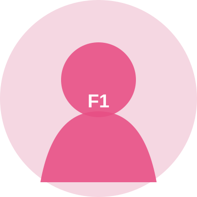

莫干山猫虫阁建立史
开天辟地的莫干山先民建立猫虫阁，大辟天下寒士俱欢颜
#随笔#Blog
↗01 / PROFILE
🎓 IE undergrad @ ZJUT | 🐱🐛 Catbug & Doro enthusiast | 🍗 V me 50 on Thursdays (Crazy Thursday!)
02 / LINKS
放一些你经常访问、喜欢阅读，或者朋友的个人网站。
点击任意友链，查看完整卡片。
04 / LATEST WRITING
05 / ALBUM
近日一些名场面暂存处。


拖动、滚轮或使用左右按钮浏览。
END / SIGNAL
抵达页尾，也不是结束。

这里显示友链简介。